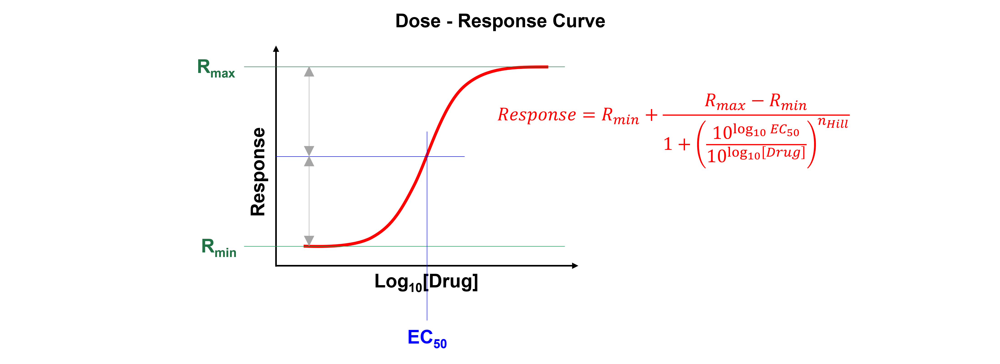
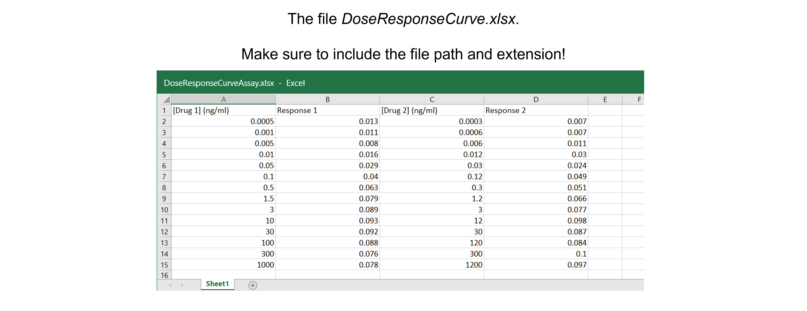

Dose response curve#
Introduction#
A dose-response curve is a curve that shows the relationship between the dose of a drug administered (\([Drug]\) (ng ml\(^{-1}\)) or \(\mu\)\(M\)) and its pharmacological effect (Response).
When the relation between drug dose (X-axis) and drug response (Y-axis) is plotted on a base 10 logarithmic scale, this produces a sigmoidal curve. This representation is more useful than a linear plot because it expands the dose scale in the region where drug response is changing rapidly and compresses the scale at higher doses where large changes have little effect on response.
Nonlinear regression can determine a drug’s potency (i.e. the concentration that gives half-maximal response, \(EC_{50}\)). The Hill Equation or 4 parameter logistic model is a standard model often used in dose-response curve analysis:
Where \(Response\) is the measured signal, \(x\) is the log of drug dose or concentration, \(EC_{50}\) is the relative 50% effective dose or concentration, \(n_{Hill}\) is the Hill exponent and describes the steepness of the curve, \(R_{max}\) is the maximum effect and \(R_{min}\) is the effect in the absence of drug.
{kind=link}
See here for more information.
Data#
The spreadsheet “DoseResponseCurveAssay.xlsx” contains two independent replicates. These are two independent experiments and - as we can see - the drug administered doses differ between experiments. As a result, we cannot calculate average response values.
{kind=link}
Data analysis#
Exercise 37
Import the libraries needed. Use convenient naming.
Solution to Exercise 37
#Import the libraries
import numpy as np
import matplotlib.pyplot as plt
import pandas as pd
from scipy.optimize import curve_fit
Exercise 38
Read in the data containing \([Drug]\) (ng ml\(^{-1}\)) and response from the Excel file into a Python pandas DataFrame.
Solution to Exercise 38
Here’s one possible solution.
#Read the Excel file
dfDRC = pd.read_excel ('../data/DoseResponseCurveAssay.xlsx', #create a pandas DataFrame from the filename with file path and extension shown
sheet_name=0, #use the first sheet (no need to specifically include this as we use the default setting)
header=0) #our data has column names
print(dfDRC) #print the DataFrame created
Exercise 39
Calculate \(log_{10}\)\([Drug]\).
Tip: use the numpy.log10 command to calculate \(log_{10}\).
Solution to Exercise 39
Here’s one possible solution.
#Calculate log10[Drug]
dfDRC['log[Drug 1]'] = np.log10(dfDRC['[Drug 1] (ng/ml)'])
dfDRC['log[Drug 2]'] = np.log10(dfDRC['[Drug 2] (ng/ml)'])
Exercise 40
Plot the data: log\([Drug]\) versus response.
Inspect the data!
Do we discern a clear trend in our data?
Do the data show a positive (sloping upward), negative (sloping downward), or no (spread out) correlation?
Do we notice a linear or a non-linear relationship between x- and y-values?
Do we have outliers?
Where the values entered correctly?
Where there any experimental errors? E.g. a calculation error that we picked up afterwards when looking at our lab notebook?
Are the data points a mistake? E.g. a pipetting error?
In this example, we do not have plenty replicate data points at each value of x so we cannot use statistical tests, e.g. the Grubbs test (see here for more information and an online Grubbs test calculator), on each set of replicates to determine whether a data point is a significant outlier from the rest.
We often only measure a data point once or twice, like in this example. Useful tools in this case are:
studentized residuals, which look at the residuals calculated from the experimental data and model data. See here for more information.
robust techniques which use median, rather than mean, values. See here for more information.
Cook’s distance, which measures the influence of each data point (of note, an influential point is not always an outlier!), thereby determining how much predicted values would change if that point were deleted. See here for more information.
ROUT (Robust regression and OUTlier removal) for non-linear regression. See the article by Motulsky HJ and Brown RE (2006), available here, for more information.
Solution to Exercise 40
Here’s one possible solution.
#Plot the data
plt.figure(figsize=(7,5)) #start a figure object
plt.plot(dfDRC['log[Drug 1]'], dfDRC['Response 1'], #plot a set of x (= the log concentrations) ,y (=the responses) data
marker='o', color='gray', markersize=8) #use a round, gray marker with size 8
plt.plot(dfDRC['log[Drug 2]'], dfDRC['Response 2'], #plot a set of x (= the log concentrations) ,y (=the responses) data, a different experiment
marker='s', color='black', markersize=8) #use a square, black marker with size 8
plt.title('Dose-response Curve', fontsize=18) #title of graph
plt.xlabel('log $[Drug]$ (ng ml$^{-1}$)', fontsize=14) #X-axis label
plt.ylabel('Response', fontsize=14) #Y-axis label
plt.show() #show the figure object
We see a trend - a positive correlation; maybe the expected sigmoidal curve - between log \([Drug]\) and response. No data points are spotted as outliers.
Exercise 41
Define the Hill function to fit the data.
Solution to Exercise 41
Here’s one possible solution.
#Define the Hill function
def funcDRC(x, Rmin, Rmax, EC50, nHill): #create the function
"""
Return the Hill equation using Rmin, Rmax, EC50, and nHill
Args:
Rmin, the response effect in the absence of drug
Rmax, the maximum effect
EC50, the relative 50% effective dose or concentration
nHill, the Hill exponent which describes the steepness of the curve
Returns:
the Hill equation function "a * x + b"
"""
return Rmin + (Rmax-Rmin) / (1 + (((10**(np.log10(EC50)))/(10**x))**nHill))
Exercise 42
Fit all data using the Hill function.
Tips:
Use the pandas.concat function to combine columns.
Look at the graph to find good guesses for the model parameters (see figure above).
Solution to Exercise 42
Here’s one possible solution.
#Combine all data
xDRC= pd.concat([dfDRC['log[Drug 1]'], dfDRC['log[Drug 2]']])
yDRC= pd.concat([dfDRC['Response 1'], dfDRC['Response 2']])
#Fit all data
paramsDRC, params_covarianceDRC = curve_fit(funcDRC, #the function we try to fit to the data
xDRC, #the x values, the log10 concentrations
yDRC, #the y values, the responses
[0.01, 0.12, 0.2, 1]) #the starting parameters, guesses from graph
Exercise 43
Report the fit parameters and standard errors on the fit parameters: \(R_{min}\), \(R_{max}\), \(EC_{50}\), and \(n_{Hill}\).
Solution to Exercise 43
Here’s one possible solution.
#Report the fit parameters with standard errors
print("Rmin, the effect in the absence of drug = ", paramsDRC[0], "±", np.sqrt(np.diag(params_covarianceDRC))[0])
print("Rmax, the maximum effect = ", paramsDRC[1], "±", np.sqrt(np.diag(params_covarianceDRC))[1])
print("EC50 in (ng/ml), the relative 50% effective concentration = ", paramsDRC[2], "±", np.sqrt(np.diag(params_covarianceDRC))[2])
print("nHill, the Hill exponent = ", paramsDRC[3], "±", np.sqrt(np.diag(params_covarianceDRC))[3])
Exercise 44
Calculate the residuals.
Solution to Exercise 44
Here’s one possible solution.
#Calculate the residuals
residDRC = yDRC - funcDRC(xDRC, *paramsDRC) #calculate the residuals, the star in *paramsDRC unpacks the array so the two optimized parameter values become the second to fifth arguments (after the x-values) to the function
Exercise 45
Produce a combined figure showing the residuals plot underneath the main plot with data and fitted curve. Make sure they are aligned and have the same X-axis so we can see which residual corresponds to which data point.
Inspect the quality of the fit!
Look at the graph of the experimental data and the fitted curve Do the experimental data and model match?
Look at the graph of the residuals. Are they around 0? Are they random or is there a trend? If the residuals display a systematic pattern, the model fits the data poorly.
Look at the fit parameters and the standard errors on the fit parameters. Are the fit parameters within (biological) reason? Are the standard errors on the fit parameters small? If a standard error on a fit parameter is bigger than the fit parameter, it is possible that there are not enough data points or that the model fits the data poorly.
Look at the goodness of fit statistics. But be careful! For example, R-square, ranging from 0 (worst possible fit) to 1 (best possible fit), compares the fit of your model to the fit of a horizontal line through the mean of all Y values, which is valid for linear regression, but not for non-linear regression. For those reasons, these fit statistics are not readily available as output of the SciPy curve_fit() function…
Solution to Exercise 45
Here’s one possible solution.
#Generate X-values to calculate the function
xvalues = np.linspace(-10,10,1000) #create an array with 1000 evenly distributed elements between 0 (included) and -10 (included)
#Produce a combined graph
fig = plt.figure() #to create a figure object
xlimits = [-4, 4] #to make sure we use the same of the X-axis boundaries for both plots
ax1 = fig.add_axes([0.1, 0.51, 1, 0.8]) #to specify the coordinates, width and height of the top plot
ax2 = fig.add_axes([0.1, 0.1, 1, 0.4]) #to specify the coordinates, width and height of the bottom plot
ax1.plot(xDRC, yDRC, #plot a set of x (= the log concentrations) ,y (=the responses) data
marker='o', color='gray', markersize=8, linestyle='None', #use a round, gray marker with size 8 but no line
label='Data') #add a legend label
ax1.plot(xvalues, funcDRC(xvalues, *paramsDRC), #add the fitted curve to plot. Use the generated log10 concentrations as x-values. Use the fit parameters to calculate the y-values. The star in *paramsDRC unpacks the array so the two optimized parameter values become the second to fifth arguments (after the x-values) to the function.
color="red", #use a red line
label='Fit') #add a legend label
ax1.axis(xlimits + [0, 0.12]) #sets the X-axis and Y-axis boundaries for the top plot
ax1.tick_params(axis='x', bottom=False, labelbottom=False) #removes the ticks and tick labels on the X-axis for the top plot
ax1.set_ylabel('Response', fontsize=14) #adds Y-axis title for the top plot
ax1.legend(loc='upper left') #include legend
ax2.plot(xDRC, residDRC, #plot a set of x (=the concentrations),y (= the residuals) data points
marker='o', color='gray', linestyle='None', markersize=8) #use a round, gray marker with size 8 but no line
ax2.axhline(0, color='gray', linestyle="--") #adds a horizontal line at y=0
ax2.axis(xlimits + [-0.025,0.025]) #sets the X-axis and Y-axis boundaries for the bottom plot
ax2.set_xlabel('log $[Drug]$ (ng ml$^{-1}$)', fontsize=14) #adds X-axis title for the bottom plot, which is the same for the top plot
ax2.set_ylabel('Residuals', fontsize=14) #adds Y-axis title for the bottom plot
plt.show() #show the figure object
All in all the fit looks good. There seems to be no trend in the residuals. The fit paramaters are within (biological) reason and the standard errors are not bigger than the fit parameters.